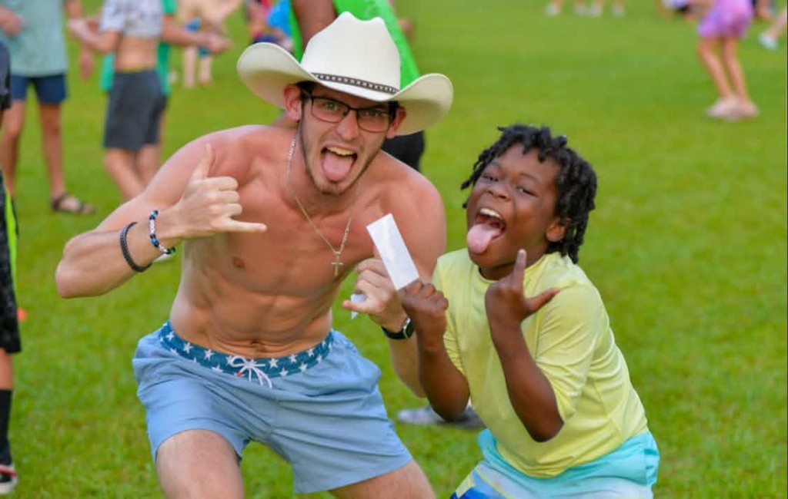
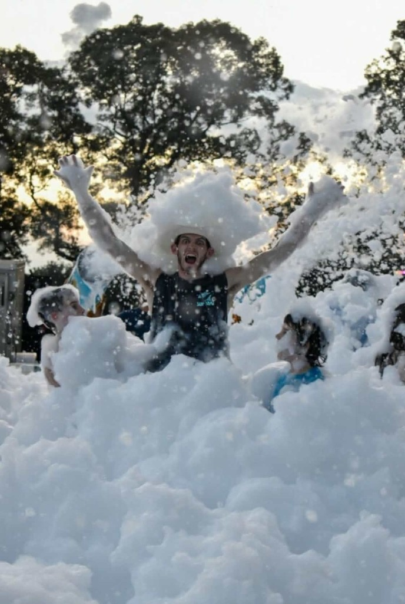
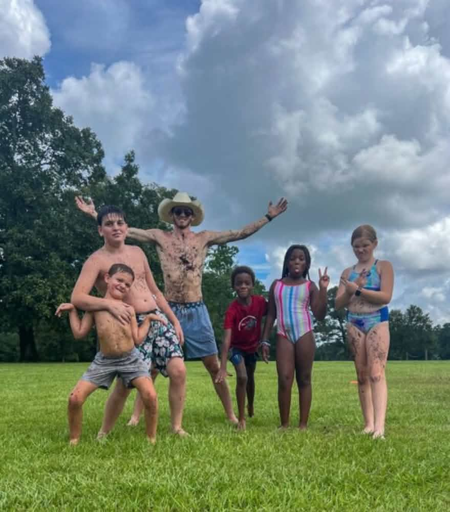
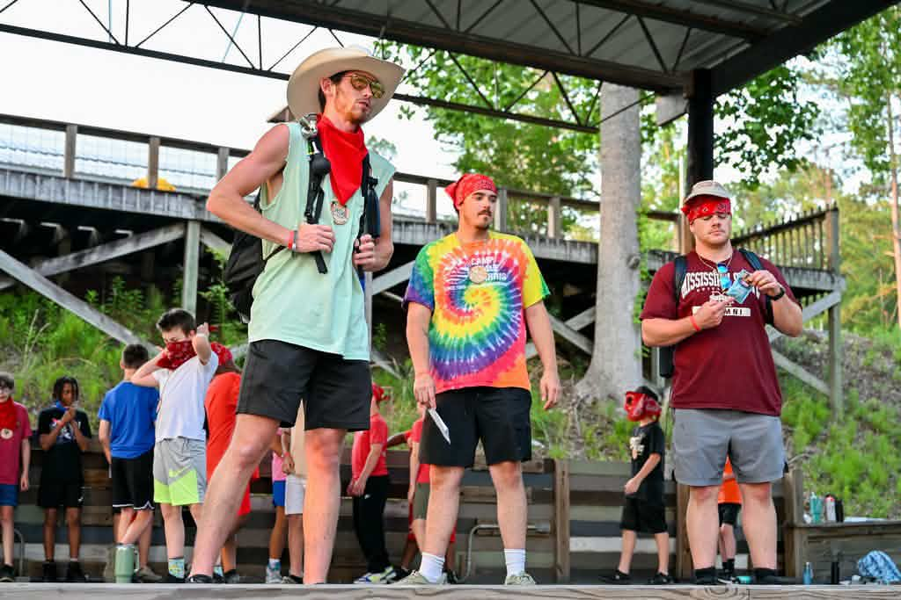
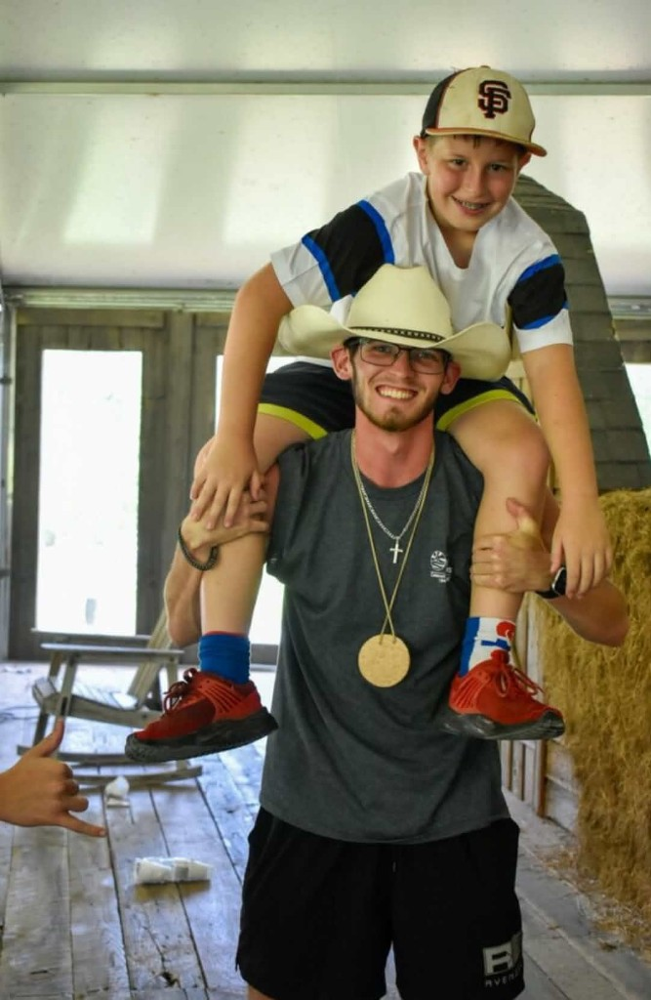
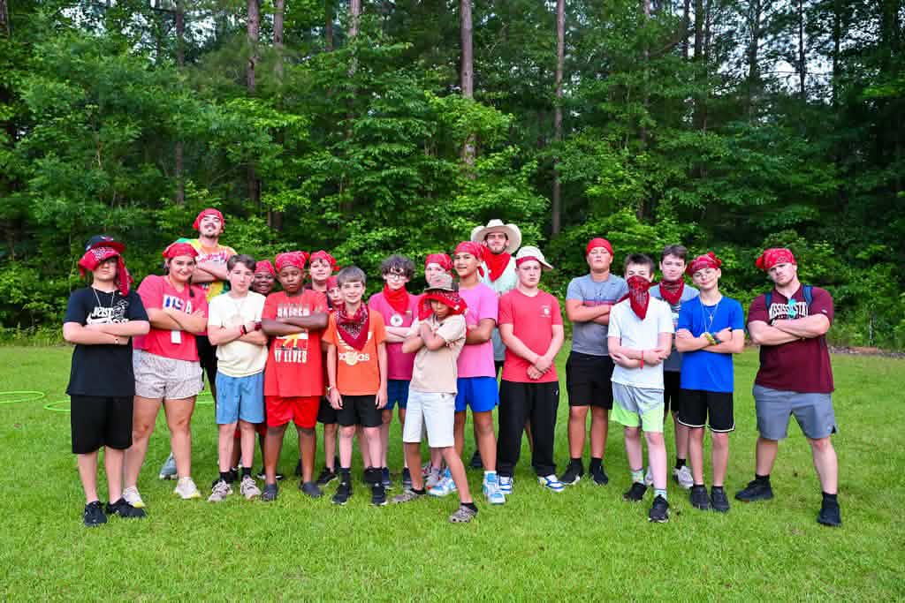
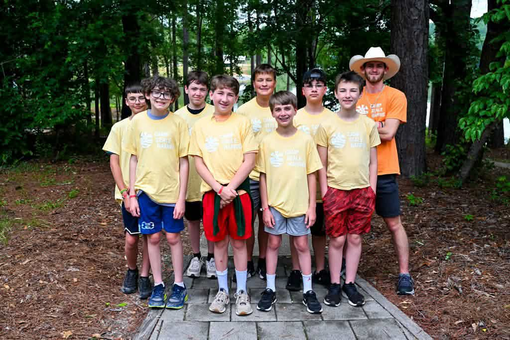

Camp Photo Gallery
Moments from games on the lawn, messy adventures, team spirit, and friendships at Camp InTouch.







Moments from games on the lawn, messy adventures, team spirit, and friendships at Camp InTouch.






